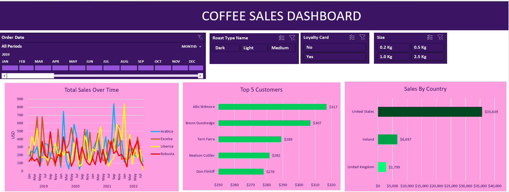

Technical Skills

Python

SQL

Power BI

Aspiring Data Analyst | Business Analyst | Data Visualization
GitHub LinkedIn Contact Me
 style="width: 450px; height: 250px; object-fit: cover; border-radius: 0;">
style="width: 450px; height: 250px; object-fit: cover; border-radius: 0;">
• Analyzed sales data from over 5,000 transactions to uncover trends and optimize sales strategies.
View ProjectPostgreSQL analysis on customer spending and genre trends.
View Project• Built an interactive Power BI dashboard to analyze sales, customer satisfaction, and inventory distribution
tracking key KPIs such as Total Sales, Average Sales, and Customer Rating.
• Analyzed over 10,000 sales records to uncover trends in revenue and customer preferences.
• Scraped and analyzed over 500 real-time job postings from LinkedIn using BeautifulSoup, extracting key metrics such
as job titles, locations, hiring companies, and job roles.
• Conducted exploratory data analysis (EDA) on 200+ job roles across various industries using Python (Pandas) to
identify high-demand roles and top hiring locations for data analysts.

Aspiring Data Analyst with hands-on experience in data manipulation, visualization, and analysis using Python, SQL, Advanced Excel, and Power BI.
Aug 2022 – Jan 2023 | Remote